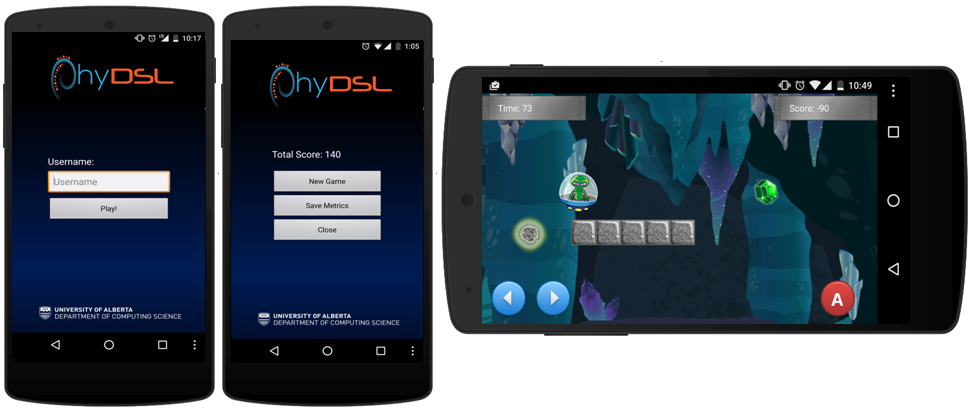

PhyDSL Tutorial - Alien Miner
In this tutorial we will explore the design and generation of Alien Miner, a physics-based platformer game. The main actor of the game is an adventurous alien whose primary mission is to collect precious gems while exploring the galaxy. In this version of Alien Miner the main actor of the game is found inside a cave with hidden treasures and dangerous meteorites. The goal of the game is to guide the alien through the cave and collect all the gems found in it. The alien should avoid all meteorites at all cost.
In Alien Miner, for every emerald and diamond collected the player will receive 20 and 30 points respectively. While emeralds are collected when the alien touches them, diamonds are collected when the player taps on their screen position. If the alien gets hit by a meteorite, the player will lose 20 points. The game has a total duration of 120 seconds. However, if the player reaches the teleportation portal at the need of the level the game will come to an end.
In this instance of Alien Miner the main actor of the game is controlled using on-screen controls, i.e. three buttons specify the vertical and horizontal acceleration of the alien. Let us briefly guide you through the development process for this game using PhyDSL.

Deeloping a Game
Creating a game in PhyDSL is a 6-step process. The following sections will explore each step.
1. Creating a Game Project
The first step in the creation of a game with PhyDSL is the creation of a gameplay design file. To begin, you need to open your Eclipse distribution with the PhyDSL and Android Development Tools plugins. If you have not yet installed any of the plugins, please go to the download section in this site.
1. On a clean workspace right click on ‘package explorer’ > New > Project ... > General > Project > Next > give the project a name such as ‘AlienMiner’ > Click Finish.
2. Create an empty folder in the root of the newly created folder, with a name such as ‘games’
3. Create a PhyDSL gameplay design file: right click on the empty folder > New> File> give the file a name such as AlienMiner.phy. It is important that all the game definition files have the .phy extension in order for the PhyDSL plugin to recognize them.
4. If this is your first time creating a .phy file, Eclipse will display a dialog asking if you want to switch to an XText perspective > Click Yes.
2. Creating a Gameplay Design File
In order to create a game definition file you first need to choose all the graphical and sound artifacts that will be part of your game. This includes all the skins for the actors of the game, the game sound effects, and its background image. In order to manage memory more efficiently you can split large background images into slices of equal size. It is important to mention that the name of the slices should include a consecutive number index, like in the example below. Later in this tutorial we will explain how slices can be used in order to create a memory efficient game. All the artifacts need to be stored in the “artifacts” directory of the generator. If you have not downloaded the PhyDSL generator please go to the download page in this site.
2.1. Declaring The Game Types
PhyDSL offers an enumeration-based type system that allows developers to specify concrete values for a wide range of variables to be used throughout the game.
This includes physical properties that will be used in the creation of the game actors, such as “elasticity”, “friction”, “density”, and “size”. Furthermore, vector and scalar variables can be declared such as “linear speed”, “angular velocity”, “gravity” and “acceleration force.” These variables will be used to specify properties of the world of the game, the actions that controls perform over the main actor of the game, and the properties of appearance events in the game. Later in this tutorial will use all of them, so sit tight and continue reading.
Resources can be used in order to access the graphical and sound artifacts of the game. Each resource variable specifies the name of a concrete file in the ‘artifacts’ directory of the generator. PhyDSL treats graphical and sound artifacts indistinctively.
You can reuse the type section of the definition file in your games. Depending on the device where you will deploy your game, you can experiment and adapt concrete values for the type system that you want to use in your game.
2.2 Defining The Game Actors
The second step on the creation of the game play design is to design the actors of the game. In PhyDSL actors are defined using eight different properties. The first three, namely “density”, “elasticity” and “friction” specify how each actor will behave in the physics world of the game, including their interactions, e.g. how they will react in front of a collision event among them.
The “image”, “size” and “shape” properties determine the look and feel of the actor. Indeed, all the properties assume the concrete values specified in the type section defined above (Section 2.1.) Furthermore, the shape property can only assume two values “circle” or “square”. Depending on the desired visual characteristics of each actor, the shape and size definitions will help PhyDSL to more precisely model the in the behaviours of the actors in the physics simulation of the game.
The property “mobility” can hold two concrete values, namely “dynamic” and “static”. This property specifies whether an actor will be able to move around the physics world of the game, of if is going to be anchored to a specify position. In the case of Alien Miner, for example, both the “emerald” and the “brick” actors are static. In effect, considering the gameplay design described above, we would like both of them to stay in the same place throughout the entire duration of the game; while the emeralds are actors that will be collected by the alien and should be placed in a specific place in the world of the game, the bricks are the building blocks for the platforms that should not move. In effect, static actors are not influenced by other forces in the game, including gravity or collision events.
Finally, the “type” property can assume three concrete values “abstract”, “concrete” or “main actor”.
Abstract Actors:
Abstract actors do not interact with any other actor in the game. They can be used as place holders that help modeling the graphical environment of the world. As a concrete example, if a developer wishes to add a tree image to the background of the game, she can do so using an abstract actor. Since no elements will interact with it, the tree will blend with the background image of the world. I effect, the physical properties of an abstract actor are ignored by the physics engine.
In the case of Alien Miner, diamonds are abstract actors. The idea behind this design decision is to make diamonds “transparent” for the physics engine, however, we would like player to be able to hit them using the touch capabilities of her device in order to collect them. Later in this tutorial we will explain how this is done.
Concrete Actors:
Concrete actors are the most common actors in most gameplay designs. They observe all the physical interactions supported by the physics engine, such as collisions inside the world of the game.
Main Actor:
The main actor of the game has the same type properties than other concrete actors. However, labelling an actor as a main actor helps PhyDSL to provide two gameplay design features to developers, namely complex camera behaviours, and on-screen controls. Later in this tutorial we will see how a game can be designed to have a camera that follows the main actor of the game using different strategies. Camera behaviours are only linked to the main actor of the game. Furthermore, we will explore how a developer may opt for having on-screen controls like buttons or interactive elements that manipulate the position of the main actor. It is important to mention that not all games need a main actor. For example, games like Candy Crush or Bejewelled don’t have one. It is also important to mention that in the case of having declared multiple actors as main actor, PhyDSL will only treat the first of them as such.
Autocompletition and Static Checking
You can use the syntax directed editor to help you during the construction of a gameplay designs. At any point you can use CTR+SPACE to access the auto-competition features of the editor. If there is any syntactical error in the file, the editor will also let you know by highlighting the errors in red.